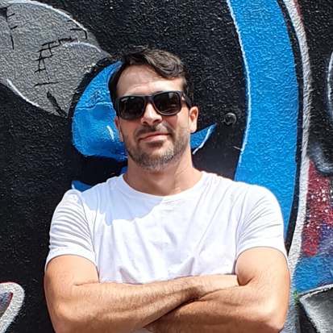

Augusto Dantas

Identificação
Email:
augustow.dantas@gmail.com
Telefone:
81 9.9999-9999
Github:
github.com/augustodantasdv
Linkedin:
linkedin.com/in/augusto-dantas
Formação
Bacharel em Administração com ênfase em Marketing
Estudante de Tecnologia ADS
Desenvolverdor FullStack
Experiência
Função
Local
Período
Administrativo | Financeiro
Dom Berry Açaí
2015 a 2020
Analista de contratos
Estaleiro Atlântico Sul
2013 a 2015
Inspetor da qualidade
estaleiro Atlântico Sul
2012 a 2013